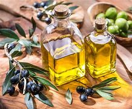

Ingredient Spotlight: Olive Oil

Overview
Description: Olive oil is a liquid fat obtained from olives, widely used in cooking and dressing.
Origin: It has been a staple in Mediterranean cuisine for thousands of years.
Nutritional Information
| Nutrient |
Amount per 100g |
| Calories |
884 |
| Fat |
100g |
| Carbohydrates |
0g |
| Protein |
0g |
Health Benefits:
- Rich in healthy monounsaturated fats.
- Contains antioxidants and may reduce inflammation.
Culinary Uses
Flavor Profile: Olive oil has a rich, fruity flavor with varying intensity depending on the type.
Cooking Methods: Used for frying, roasting, drizzling, and dressing salads.
Common Dishes:
- Salad dressings
- Pasta dishes
- Roasted vegetables
Storage and Preparation Tips
Storage Guidelines: Store in a cool, dark place in a sealed container to prevent oxidation.
Preparation Tips: Use high-quality extra virgin olive oil for dressings and finishing dishes.
Varieties and Substitutes
Types:
- Extra virgin olive oil
- Light olive oil
Substitutes:
Canola oil or avocado oil can be used as substitutes in most recipes.
Fun Facts and Trivia
- Olive oil has been produced for over 5,000 years!
- It is known as "liquid gold" due to its high value in culinary and health contexts.
FAQs
Q: Is olive oil healthy?
A: Yes, it's rich in healthy fats and antioxidants.
Q: Can I use olive oil for frying?
A: Yes, olive oil is suitable for frying, but it's best to use it for medium to low heat.